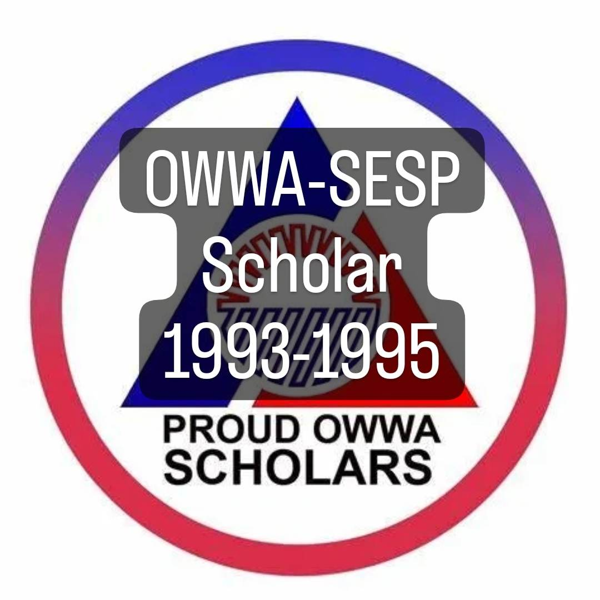

Achievements
First Place - Paper Presentation (Technology, Engineering and Sciences Category , 3rd International and Annual Convention – Philippine Association of Extension Program Implementers (PAEPI-Global), Bahay Kalinaw University of the Philippines Diliman, Quezon City,
February 22-23, 2016
Outstanding Organization Moderator, Gabi ng Parangal San Beda College of Arts and Sciences March 2013
Featured in PCWorld Philippines Campus Edition Volume 1 Number 1 2012 in the section “People Power “in an article entitled “Linking the Digital Divide†on page 27
Top Ten Faculty Members on Student Evaluation (ranked 9th) -- San Beda College SY 2010-2011
Teaching Excellence Award -- Far Eastern University – East Asia College, First Semester SY 2008-2009 February 21, 2009

Professor Bibbo Students’ Choice Award – February 14, 2005 – San Beda College Student Council
Most Bibong Prof – Prof Ko ‘To Students’ Choice Award – February 12, 2004 – San Beda College Student Council
Top Ten Faculty Members on Student Evaluation (ranked 4th) -- San Beda College SY 1996-1997 – Oct 24, 1997
Silver Medalist – Oratorical Contest – 1st Year High School Level, National Teachers College, October 1982
PD 451 Scholar June 1985
OWWA-SESP Scholar 1993-1995
